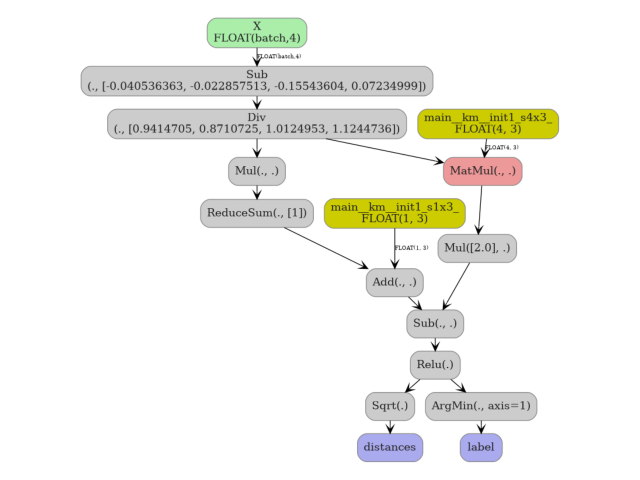
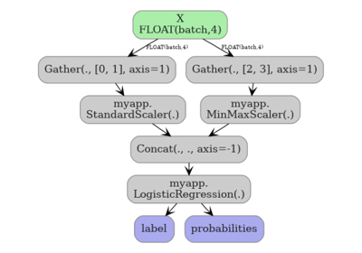

Note
Go to the end to download the full example code.
Converting a scikit-learn KMeans to ONNX¶
yobx.sklearn.to_onnx() converts a fitted
sklearn.cluster.KMeans into an
onnx.ModelProto that can be executed with any ONNX-compatible
runtime.
The converted model produces two outputs:
label - cluster index for each sample (equivalent to
predict()).distances - Euclidean distance from each sample to every centroid (equivalent to
transform()).
The workflow is:
Train a
KMeansas usual.Call
yobx.sklearn.to_onnx()with a representative dummy input.Run the ONNX model with any ONNX runtime — this example uses onnxruntime.
Verify that the ONNX outputs match scikit-learn’s predictions.
import numpy as np
import onnxruntime
from sklearn.cluster import KMeans
from sklearn.pipeline import Pipeline
from sklearn.preprocessing import StandardScaler
from yobx.doc import plot_dot
from yobx.sklearn import to_onnx
1. Train a KMeans model¶
rng = np.random.default_rng(0)
X = rng.standard_normal((100, 4)).astype(np.float32)
km = KMeans(n_clusters=3, random_state=0, n_init=10)
km.fit(X)
2. Convert to ONNX¶
ONNX model inputs : ['X']
ONNX model outputs: ['label', 'distances']
3. Run the ONNX model and compare outputs¶
ref = onnxruntime.InferenceSession(onx.SerializeToString(), providers=["CPUExecutionProvider"])
label_onnx, distances_onnx = ref.run(None, {"X": X})
label_sk = km.predict(X).astype(np.int64)
distances_sk = km.transform(X).astype(np.float32)
print("\nFirst 5 labels (sklearn):", label_sk[:5])
print("First 5 labels (ONNX) :", label_onnx[:5])
print("\nFirst 5 distances (sklearn):", distances_sk[:5].round(4))
print("First 5 distances (ONNX) :", distances_onnx[:5].round(4))
assert (label_sk == label_onnx).all(), "Labels differ!"
assert np.allclose(distances_sk, distances_onnx, atol=1e-4), "Distances differ!"
print("\nAll labels and distances match ✓")
First 5 labels (sklearn): [2 1 0 0 1]
First 5 labels (ONNX) : [2 1 0 0 1]
First 5 distances (sklearn): [[1.9018 1.3076 1.0513]
[2.7406 1.1723 2.3066]
[0.7925 2.3442 2.1114]
[1.8823 3.3654 3.1916]
[1.8663 0.9522 2.1298]]
First 5 distances (ONNX) : [[1.9018 1.3076 1.0513]
[2.7406 1.1723 2.3066]
[0.7925 2.3442 2.1114]
[1.8823 3.3654 3.1916]
[1.8663 0.9522 2.1298]]
All labels and distances match ✓
4. KMeans inside a Pipeline¶
KMeans also works as the final step of a Pipeline.
pipe = Pipeline(
[
("scaler", StandardScaler()),
("km", KMeans(n_clusters=3, random_state=0, n_init=10)),
]
)
pipe.fit(X)
onx_pipe = to_onnx(pipe, (X,))
ref_pipe = onnxruntime.InferenceSession(
onx_pipe.SerializeToString(), providers=["CPUExecutionProvider"]
)
label_pipe_onnx, _ = ref_pipe.run(None, {"X": X})
label_pipe_sk = pipe.predict(X).astype(np.int64)
assert (label_pipe_sk == label_pipe_onnx).all(), "Pipeline labels differ!"
print("Pipeline labels match ✓")
Pipeline labels match ✓
5. Visualize the pipeline¶
plot_dot(onx_pipe)

Total running time of the script: (0 minutes 2.824 seconds)
Related examples

KNeighbors: choosing between CDist and standard ONNX

Exporting sklearn estimators as ONNX local functions